전기기사 (2004-03-07 기출문제)
1과목: 전기자기학
1. 자계분포 H =xy j -xz k [A/m]를 발생시키는 점(1,1,1)[m] 에서의 전류밀도는 몇 A/m2 인가?
- 2
- 3
- √2
- √3
(정답률: 53%)

2. 임의의 단면을 가진 2개의 원주상의 무한히 긴 평행도체가 있다. 지금 도체의 도전률을 무한대라고 하면 C, L, ε 및 μ사이의 관계는? (단, C는 두 도체간의 단위길이당 정전용량, L은 두 도체를 한개의 왕복회로로 한 경우의 단위길이당 자기인덕턴스, ε은 두 도체사이에 있는 매질의 유전률, μ는 두 도체사이에 있는 매질의 투자율이다.)
- Cε= Lμ
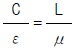
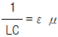
- LC =εμ
(정답률: 73%)
3. 패러데이 관(Faraday 管)에 대한 설명 중 틀린 것은?
- 패러데이관내의 전속선 수는 일정하다.
- 진전하가 없는 점에서는 패러데이관은 불연속적이다.
- 패러데이관의 밀도는 전속밀도와 같다.
- 패러데이관 양단에 정(正), 부(負)의 단위 전하가 있다.
(정답률: 77%)
4. 전류가 흐르는 도선을 자계안에 놓으면, 이 도선에 힘이 작용한다. 평등자계의 진공 중에 놓여 있는 직선 전류 도선이 받는 힘에 대하여 옳은 것은?
- 전류의 세기에 반비례한다.
- 도선의 길이에 비례한다.
- 자계의 세기에 반비례한다.
- 전류와 자계의 방향이 이루는 각의 탄젠트 각에 비례한다.
(정답률: 63%)
5. 비투자율이 500인 철심을 이용한 환상 솔레노이드에서 철심속의 자계의 세기가 200A/m일 때 철심속의 자속밀도 B[T]와 자화율 X[H/m]는 약 얼마인가?
- B=π×10-2 , X=3.2×10-4
- B=π×10-2 , X=6.3×10-4
- B=4π×10-2 , X=6.3×10-4
- B=4π×10-2 , X=12.6×10-4
(정답률: 59%)
6. Ωㆍsec와 같은 단위는?
- H
- H/m
- F
- F/m
(정답률: 73%)
7. 환상 철심에 권수 NA인 A코일과 권수 NB인 B코일이 있을 때 코일 A의 자기인덕턴스가 LA[H]라면 두 코일간의 상호인덕턴스는 몇 H 인가? (단, A코일과 B코일간의 누설자속은 없는 것으로 한다.)
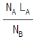
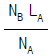
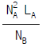
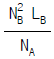
(정답률: 77%)
8. 정전용량이 1μF인 공기콘덴서가 있다. 이 콘덴서 판간의 1/2 인 두께를 갖고 비유전률 εr=2인 유전체를 그 콘덴서의 한 전극면에 접촉하여 넣었을 때 전체의 정전용량은 몇 μF 가 되는가?(오류 신고가 접수된 문제입니다. 반드시 정답과 해설을 확인하시기 바랍니다.)
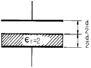
- 2
- 1/2
- 4/3
- 5/3
(정답률: 73%)
9. 매질 1 이 나일론 (비유전율 εs = 4)이고, 매질 2가 진공일 때 전속밀도 D가 경계면에서 각각 θ1, θ2 의 각을 이룰 때 θ2=30° 라 하면 θ1의 값은?(문제 오류로 실제 시험에서는 전항 정답 처리 된 문제입니다. 여기서는 가답안인 2번을 누르면 정답 처리 됩니다.)
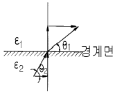
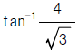
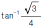
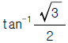
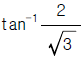
(정답률: 64%)
10. 자속밀도가 0.3Wb/m2인 평등자계내에 5A의 전류가 흐르고 있는 길이 2m인 직선도체를 자계의 방향에 대하여 60도의 각도로 놓았을 때 이 도체가 받는 힘은 약 몇 N 인가?
- 1.3
- 2.6
- 4.7
- 5.2
(정답률: 74%)
11. 정전계내에 있는 도체 표면에서의 전계의 방향은 어떻게 되는가?
- 임의 방향
- 표면과 접선방향
- 표면과 45도 방향
- 표면과 수직방향
(정답률: 65%)
12. 무한장 솔레노이드에 전류가 흐를 때 발생되는 자장에 관한 설명 중 옳은 것은?
- 내부 자장은 평등자장이다.
- 외부와 내부의 자장의 세기는 같다.
- 외부 자장은 평등자장이다.
- 내부 자장의 세기는 0 이다.
(정답률: 76%)
13. 다음 중 옳은 것은?
- grad V 는 전계방향으로 향하는 전위의 변화율이다.
- curl curl H = grad div H - ∇2 H 의 벡터 항등식은 멕스웰 전자 방정식을 이용하여 전신 방정식(telegraphic equation)을 유도하는데 필요하다.
- div E 는 폐곡면의 단위 면적당의 전기력선의 발산량이다.
- curl H (=∇×H )는 rot H 와 같은 것이며 자계내의 1 Wb가 이동하여 만든 폐로면내 단위 길이당의 선적 분이다.
(정답률: 36%)
14. 한변의 저항이 Ro 인 그림과 같은 무한히 긴 회로에서 AB간의 합성저항은 어떻게 되는가?
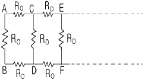
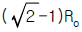
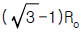
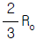
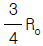
(정답률: 68%)
15. 전력용 유입 커패시터가 있다. 유(기름)의 비유전률이 2 이고 인가된 전계 E =200sinωt ax[V/m]일 때 커패시터 내부에서의 변위 전류밀도는 몇 A/m2 인가?
- 400ω cosωt ax
- 400 sinωt ax
- 200ω cosωt ax
- 400ω sinωt ax
(정답률: 60%)
16. 액체 유전체를 포함한 콘덴서 용량이 C[F]인 것에 V[V]의 전압을 가했을 경우에 흐르는 누설전류는 몇 A 인가? (단, 유전체의 비유전률은 εs이며, 고유저항은 ρ[Ω.m]라 한다.)
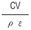
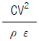
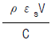
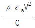
(정답률: 67%)
17. 균일한 자속 밀도 B 중에 자기 모멘트 m 의 자석(관성 모멘트 I)이 있다. 이 자석을 미소 진동 시켰을 때의 주기는 얼마인가?
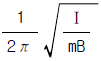
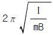
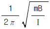
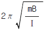
(정답률: 38%)
18. 미분방정식 형태로 나타낸 멕스웰의 전자계 기초 방정식은?
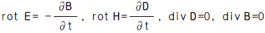
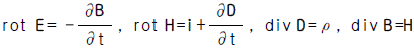
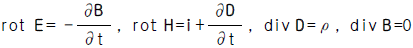
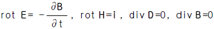
(정답률: 76%)
19. 30V/m의 전계내 50V 되는 점에서 1C 의 전하를 전계 방향으로 70㎝ 이동한 경우, 그 점의 전위는 몇 V 인가?
- 21
- 29
- 35
- 65
(정답률: 72%)
20. 유전율이 다른 두 유전체의 경계면에 작용하는 힘은? (단, 유전체의 경계면과 전계방향은 수직이다.)
- 유전율의 차이에 비례
- 유전율의 차이에 반비례
- 경계면의 전계의 세기의 제곱에 비례
- 경계면의 전하밀도의 제곱에 비례
(정답률: 35%)
2과목: 전력공학
21. 3본의 송전선에 동상의 전류가 흘렀을 경우 이 전류를 무슨 전류라 하는가?
- 영상전류
- 평형전류
- 단락전류
- 대칭전류
(정답률: 55%)
22. 부하역률이 cosθ인 경우의 배전선로의 전력손실은 같은 크기의 부하전력으로 역률이 1 인 경우의 전력손실에 비하여 몇 배인가?
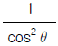
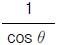
- cosθ
- cos2θ
(정답률: 66%)
23. 케이블을 부설한 후 현장에서 절연내력시험을 할 때 직류를 사용하는 이유로 가장 적당한 것은?
- 절연 파괴시까지의 피해가 적다.
- 절연내력은 직류가 크다.
- 시험용 전원의 용량이 적다.
- 케이블의 유전체손이 없다.
(정답률: 28%)
24. 직접접지방식이 초고압 송전선에 채용되는 이유 중 가장 적당한 것은?
- 지락고장시 병행 통신선에 유기되는 유도전압이 작기 때문에
- 지락시의 지락전류가 적으므로
- 계통의 절연을 낮게 할 수 있으므로
- 송전선의 안정도가 높으므로
(정답률: 55%)
25. 정전압 송전방식에서 전력원선도를 그리려면 무엇이 주어져야 하는가?
- 송수전단 전압, 선로의 일반회로 정수
- 송수전단 역률, 선로의 일반회로 정수
- 조상기 용량, 수전단 전압
- 송전단 전압, 수전단 전류
(정답률: 58%)
26. 피뢰기의 제한전압이 728kV이고 변압기의 기준충격절연 강도가 1040kV 라고 하면 보호 여유도는 약 몇 % 정도 되는가?
- 31
- 38
- 43
- 47
(정답률: 40%)
27. 가스터빈 발전의 장점은?
- 효율이 가장 높은 발전방식이다.
- 기동시간이 짧아 첨두부하용으로 사용하기 용이하다.
- 어떤 종류의 가스라도 연료로 사용이 가능하다.
- 장기간 운전해도 고장이 적으며, 발전효율이 높다.
(정답률: 58%)
28. 포오밍(foaming)의 원인은?
- 과열기의 손상
- 냉각수의 불순물
- 급수의 불순물
- 기압의 과대
(정답률: 46%)
29. 단상 교류회로에 3150/210V의 승압기를 60kW, 역률 0.8인 부하에 접속하여 전압을 상승시키는 경우에 몇 kVA 의 승압기를 사용해야 적당한가? (단, 전원전압은 2900V 이다.)
- 3
- 5
- 7
- 10
(정답률: 38%)
30. 주상변압기의 2차측 접지공사는 어느 것에 의한 보호를 목적으로 하는가?
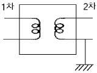
- 2차측 단락
- 1차측 접지
- 2차측 접지
- 1차측과 2차측의 혼촉
(정답률: 62%)
31. 동일한 조건하에서 3상 4선식 배전선로의 총 소요전선량은 3상 3선식의 것에 비해 몇 배정도로 되는가? (단, 중성선의 굵기는 전력선의 굵기와 같다고 한다.) 가.
- 1/3
- 3/4
- 3/8
- 4/9
(정답률: 48%)
32. 그림과 같은 회로에서 4단자 정수 A , B , C , D 는? (단, Es, Is는 송전단 전압, 전류이고, ER, IR는 수전단전압, 전류, Y는 병렬 어드미턴스이다.)
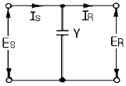
- A =1, B =0, C =Y, D =1
- A =1, B =Y, C =0, D =1
- A =1, B =Y, C =1, D =0
- A =1, B =0, C =0, D =1
(정답률: 63%)
33. 송배전 선로에서 도체의 굵기는 같게 하고 경간을 크게 하면 도체의 인덕턴스는?(오류 신고가 접수된 문제입니다. 반드시 정답과 해설을 확인하시기 바랍니다.)
- 커진다.
- 작아진다.
- 변함이 없다.
- 도체의 굵기 및 경간과는 무관하다.
(정답률: 20%)
34. 저압 뱅킹방식의 장점이 아닌 것은?
- 전압강하 및 전력손실이 경감된다.
- 변압기 용량 및 저압선 동량이 절감된다.
- 부하 변동에 대한 탄력성이 좋다.
- 경부하시의 변압기 이용 효율이 좋다.
(정답률: 54%)
35. 특유속도가 큰 수차일수록 발생되는 현상으로 옳은 것은?
- 회전자의 주변속도가 대단히 작아진다.
- 회전수가 커진다.
- 저낙차에서는 사용할 수 없다.
- 경부하에서 효율의 저하가 심하다.
(정답률: 40%)
36. 가공송전선로를 가선할 때에는 하중조건과 온도조건을 고려하여 적당한 이도(dip)를 주도록 하여야 한다. 다음 중 이도에 대한 설명으로 옳은 것은?
- 이도가 작으면 전선이 좌우로 크게 흔들려서 다른 상의 전선에 접촉하여 위험하게 된다.
- 전선을 가선할 때 전선을 팽팽하게 가선하는 것을 이도를 크게 준다고 한다.
- 이도를 작게 하면 이에 비례하여 전선의 장력이 증가되며, 너무 작으면 전선 상호간이 꼬이게 된다.
- 이도의 대소는 지지물의 높이를 좌우한다.
(정답률: 63%)
37. 설비 A가 150kW, B가 350kW, 수용률이 각각 0.6 및 0.7일 때 합성최대전력이 279kW이면 부등률은?
- 1.1
- 1.2
- 1.3
- 1.4
(정답률: 69%)
38. 변전소에서 비접지 선로의 접지보호용으로 사용되는 계전기에 영상전류를 공급하는 것은?
- CT
- GPT
- ZCT
- PT
(정답률: 67%)
39. 어떤 선로의 양단에 같은 용량의 소호리액터를 설치한 3상 1회선 송전선로에서 전원측으로부터 선로길이의 1/4 지점에 1선지락고장이 발생했다면 영상전류의 분포는 대략 어떠한가?
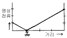
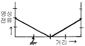
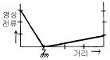
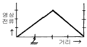
(정답률: 36%)
40. 초고압용 차단기에서 개폐저항기를 사용하는 이유는?
- 개폐써지 이상전압 억제
- 차단전류 감소
- 차단속도 증진
- 차단전류의 역률 개선
(정답률: 70%)
3과목: 전기기기
41. 극수 8, 중권직류기의 전기자 총 도체수 960, 매극 자속 0.04[wb], 회전수 400[rpm]이라면 유기 기전력은 몇[V]인가 ?
- 625
- 425
- 327
- 256
(정답률: 63%)
42. 다음은 IGBT에 관한 설명이다. 잘못된 것은?
- Insulated Gate Bipolar Thyristor의 약자이다.
- 트랜지스터와 MOSFET를 조합한 것이다.
- 고속 스위칭이 가능하다.
- 전력용 반도체 소자이다.
(정답률: 59%)
43. 어떠한 변압기에서 무유도 전부하의 효율은 97.0[%], 그 전압변동율은 2.0[%]라 한다. 그 최대효율[%]은?
- 약 93
- 약 95
- 약 97
- 약 99
(정답률: 48%)
44. 브러시를 중성축에서 이동시키는 것은?
- 로커
- 피그테일
- 호울더
- 라이저
(정답률: 44%)
45. 3상 4극 220[V]인 유도 전동기의 권선이 2병렬 델타(△× 2)결선으로 되어 있다. 결선을 고쳐 3상 380[V]로 사용하려면 다음중 옳은 것은?
- △×1
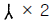
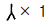
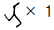
(정답률: 43%)
46. 50[Hz], 슬립 0.2 인 경우의 회전자 속도가 600[rpm]인 3상 유도전동기의 극수는?
- 16
- 12
- 8
- 4
(정답률: 65%)
47. 변압기의 전압 변동율에 대한 설명 중 잘못된 것은?
- 일반적으로 부하변동에 대하여 2차 단자 전압의 변동이 작을수록 좋다.
- 전부하시와 무부하시의 2차 단자 전압의 차이를 나타내는 것이다.
- 전압 변동율은 전등의 광도, 수명 전동기의 출력 등에 영향을 주는 중요한 특성이다.
- 인가 전압이 일정한 상태에서 무부하 2차 단자 전압에 반비례한다.
(정답률: 61%)
48. 동기 와트로 표시되는 것은?
- 1차 입력
- 출력
- 동기속도
- 토크
(정답률: 45%)
49. 정격전압이 같은 A,B 두대의 단상변압기를 병렬로 접속하여 360[KVA]의 부하를 접속하였다. A변압기는 용량 100[KVA], 퍼센트 임피던스 5[%], B변압기는 300[KVA], 퍼센트임피던스 3[%]이다. B변압기의 분담부하는 몇[KVA]인가? (단, 변압기의 저항과 리액턴스의 비는 모두 같다.)
- 260
- 280
- 290
- 300
(정답률: 42%)
50. 동기전동기의 제동권선의 효과는?
- 정지시간의 단축
- 토크의 증가
- 기동토크의 발생
- 과부하 내량의 증가
(정답률: 56%)
51. 유도 전동기의 슬립(slip) S 의 범위는?
- 1 ＞ S ＞ 0
- 0 ＞ S ＞-1
- 2 ＞ S ＞ 1
- -1 ＜ S ＜ 1
(정답률: 60%)
52. 정전압 계통에 접속된 동기발전기는 그 여자를 약하게 하면?
- 출력이 감소한다.
- 전압이 강하한다.
- 앞선 무효전류가 증가한다.
- 뒤진 무효전류가 증가한다.
(정답률: 43%)
53. 2회전자계설에 의하여 단상 유도전동기의 가상적 2개의 회전자중 정방향에 회전하는 회전자 슬립이 S 이면 역방향에 회전하는 가상적 회전자의 슬립은 어떻게 표시되는 가?
- 1 + S
- 1 - S
- 2 - S
- 3 - S
(정답률: 59%)
54. 2상 서어보 모타를 구동하는데 필요한 2상 전압을 얻는 방법으로 널리 쓰이는 방법은?
- 여자권선에 리액터를 삽입하는 방법
- 증폭기내에서 위상을 조정하는 방법
- 환상 결선 변압기를 이용하는 방법
- 2상 전원을 직접 이용하는 방법
(정답률: 29%)
55. 권수비 70인 단상변압기의 전부하 2차전압 200[V], 전압 변동률 4[%]일 때 무부하시 1차 단자전압은?
- 14560
- 13261
- 12360
- 11670
(정답률: 55%)
56. 제어 정류기의 역률제어 방법중 대칭각 제어기법의 내용이 아닌 것은?
- 출력측이나 입력측에 고조파 성분 적음
- 스위치에 대한 제어신호는 삼각파와 기준전압을 비교
- 삼각파의 위상은 입력전압의 위상과 동일하도록 제어
- 입력전압과 입력전류는 동일위상이 되어 역율이 높음
(정답률: 19%)
57. 3상 교류 동기 발전기를 정격 속도로 운전하고 무부하 정격전압을 유기하는 계자전류를 i1, 3상 단락에 의하여 정격전류 I를 유기하는 계자전류를 i2라 할때 단락비는?
- I/i1
- i2/i1
- I/i2
- i1/i2
(정답률: 42%)
58. 동기 전동기의 진상전류는 어떤 작용을 하는가?
- 증자작용
- 감자작용
- 교차자화작용
- 아무작용도 없다.
(정답률: 55%)
59. 직류기의 전기자에 사용되는 권선법은 ?
- 단층권
- 2층권
- 환상권
- 개로권
(정답률: 56%)
60. 출력 4 [KW] 1400[rpm]인 전동기의 토크는 얼마인가?
- 26.5[Kg-m]
- 2.65[Kg-m]
- 2.79[Kg-m]
- 27.9[Kg-m]
(정답률: 58%)
4과목: 회로이론 및 제어공학
61.
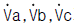
가 3상 전압일때 역상전압은? (단,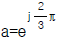
)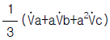
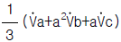
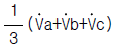
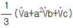
(정답률: 61%)
62. 무손실 선로에 있어서 감쇠정수 α , 위상정수를 β 라 하면 α 와 β 의 값은? (단, R, G, L, C 는 선로 단위 길이당의 저항, 콘덕턴스, 인덕턴스, 커패시턴스이다.)
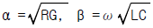
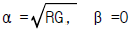
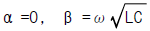
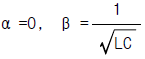
(정답률: 60%)
63. 라고 하면 이 사이의 전력은 몇[W]인가?
- 12.828
- 6.414
- 24
- 8.586
(정답률: 39%)
64. 그림의 게이트(gate)명칭은 어떻게 되는가?
- AND gate
- OR gate
- NAND gate
- NOR gate
(정답률: 39%)
65. 특성방정식이 S3 + 2S2 + Ks +10 = 0로 주어지는 제어계가 안정하기 위한 K의 값은?
- K ＞ 0
- K ＞ 5
- K ＜ 0
- 0 ＜ K ＜ 5
(정답률: 62%)
66. 다음과 같은 블록선도에서 등가 합성 전달함수 C/R 는?
(정답률: 63%)
67. 2차 시스템의 감쇠율(damping ratio) δ 가 δ ＜1 이면 어떤 경우인가?
- 비감쇠
- 과감쇠
- 발산
- 부족감쇠
(정답률: 52%)
68. f(t)=e-2tcos3t의 라플라스 변환은?
(정답률: 62%)
69. Z = 8+j6[Ω]인 평형 Y부하에 선간전압 200[V]인 대칭 3상 전압을 인가할 때 선전류 [A]는?
- 5.5
- 7.5
- 10.5
- 11.5
(정답률: 59%)
70. 그림과 같은 회로에서 i1=Im sin ωt[A]일때 개방된 2차 단자에 나타나는 유기 기전력 V2 는 얼마인가?
- ωMsinωt [V]
- ωMcosωt [V]
- ωMImsin(ωt-90° )[V]
- ωMImsin(ωt+90° )[V]
(정답률: 49%)
71. 로 표현되는 시스템의 상태 천이행렬(state-transition matrix)ф(t)를 구하시오.
(정답률: 38%)
72. 개루프 전달함수G(S)H(S)= , K＞0일 때 점근선의 실수축과의 교차점은?
- -1
- -1.5
- -2
- -2.5
(정답률: 35%)
73. 과도응답의 소멸되는 정도를 나타내는 감쇠비(decay ratio)는?
- 최대오우버슈우트/제2오우버슈우트
- 제3오우버슈우트/제2오우버슈우트
- 제2오우버슈우트/최대오우버슈우트
- 제2오우버슈우트/제3오우버슈우트
(정답률: 61%)
74. 잔류편차(OFF SET)을 일으키는 제어는?
- 비례제어
- 미분제어
- 적분제어
- 비례적분미분제어
(정답률: 54%)
75. 특성방정식이 S3 + S2 + S = 0일 때 이 계통은?
- 안정하다.
- 불안정하다.
- 조건부 안정이다.
- 임계상태이다.
(정답률: 38%)
76. 그림 (a)를 그림 (b)와 같은 등가 전류원으로 변환할 때 I[A] 와 R[Ω] 은?
- I = 6, R = 2
- I = 3, R = 5
- I = 4, R = 0.5
- I = 3, R = 2
(정답률: 56%)
77. R-L-C 직렬회로에서 직류전압 인가시 일때의 상태는?
- 진동 상태
- 비진동 상태
- 임계상태
- 정상상태
(정답률: 61%)
78. 신호 흐름 선도를 단순화 하면?
(정답률: 55%)
79. 4단자정수가 각각 일때, 전달정수 는 얼마인가?
- loge 5
- loge 4
- loge 3
- loge 2
(정답률: 47%)
80. 이산 시스템(discrete data system)에서의 안정도 해석에 대한 아래의 설명 중 맞는 것은?
- 특성방정식의 모든 근이 z 평면의 음의 반평면에 있으면 안정하다.
- 특성방정식의 모든 근이 z 평면의 양의 반평면에 있으면 안정하다.
- 특성방정식의 모든 근이 z 평면의 단위원 내부에 있으면 안정하다.
- 특성방정식의 모든 근이 z 평면의 단위원 외부에 있으면 안정하다.
(정답률: 60%)
5과목: 전기설비기술기준 및 판단기준
81. 옥내에 시설하는 관등회로의 사용전압이 1000V를 넘는 방전등공사에 사용되는 네온변압기의 외함에는 몇 종 접지공사를 하여야 하는가?
- 제1종접지공사
- 제2종접지공사
- 제3종접지공사
- 특별제3종접지공사
(정답률: 46%)
82. 사용전압 400V 미만의 이동전선으로 목욕탕에 시설하여 사용되는 것은?
- 면절연전선
- 고무절연전선
- 면코드
- 고무코드
(정답률: 28%)
83. 가반형의 용접전극을 사용하는 아크용접장치의 용접변압기의 1차측 전로의 대지전압은 몇 V 이하이어야 하는가?
- 150
- 220
- 300
- 380
(정답률: 61%)
84. 저압의 옥측 배선을 시설 장소에 따라 시공할 때 적절하지 못한 것은?
- 버스덕트공사를 철골조로 된 공장 건물에 시설
- 합성수지관공사를 목조로 된 건축물에 시설
- 금속몰드공사를 목조로 된 건축물에 시설
- 애자사용공사를 전개된 장소에 있는 공장 건물에 시설
(정답률: 44%)
85. 변압기에 의하여 특별고압 전로에 결합되는 고압전로에 방전하는 장치를 그 변압기의 단자에 가까운 1극에 설치 하였다고 할 때, 이 방전장치의 접지저항은 몇 옴 이하로 유지하여야 하는가?
- 10
- 30
- 50
- 100
(정답률: 42%)
86. 저압 옥내배선은 일반적인 경우, 지름 몇 mm 이상의 연동선이거나 이와 동등 이상의 세기 및 굵기의 것을 사용하여야 하는가?(관련 규정 개정전 문제로 여기서는 기존 정답인 1번을 누르면 정답 처리됩니다. 자세한 내용은 해설을 참고하세요.)
- 1.6
- 2.0
- 2.6
- 3.2
(정답률: 26%)
87. 시가지의 도로상에 시설하는 가공 직류 전차선로의 구분 개폐기는 몇 km 이하마다 시설하여야 하는가?
- 1.5
- 2
- 2.5
- 4
(정답률: 43%)
88. 전력보안 통신설비인 무선용 안테나 등을 지지하는 철주, 철근콘크리트주 또는 철탑의 기초의 안전율은 얼마 이상이어야 하는가?
- 1.2
- 1.5
- 1.8
- 2.0
(정답률: 44%)
89. 400V 미만의 저압 옥내배선을 할 때 점검할 수 없는 은폐 장소에 할 수 없는 배선공사는?
- 금속관공사
- 합성수지관공사
- 금속몰드공사
- 플로어덕트공사
(정답률: 32%)
90. 특별고압 지중전선이 가연성이나 유독성의 유체를 내포 하는 관과 접근하기 때문에 상호간에 견고한 내화성의 격벽을 시설하였다. 상호간의 이격거리가 몇 m 이하인 경우인가?
- 0.4
- 0.6
- 0.8
- 1
(정답률: 34%)
91. 고압 인입선을 다음과 같이 시설하였다. 시설기준에 맞지 않는 것은?
- 고압 가공인입선 아래에 위험표시를 하고 지표상 3.5m의 높이에 설치하였다.
- 1.5m 떨어진 다른 수용가에 고압 연접인입선을 시설하였다.
- 횡단 보도교 위에 시설하는 경우 케이블을 사용하여 노면상에서 3.5m의 높이에 시설하였다.
- 전선은 5㎜ 경동선과 동등한 세기의 고압 절연전선을 사용하였다.
(정답률: 49%)
92. 특별고압 전선로에 사용되는 애자장치에 대한 갑종 풍압 하중은 그 구성재의 수직투영면적 1m2에 대한 풍압하중을 몇 kgf 를 기초로 하여 계산한 것인가?(관련 규정 개정전 문제로 여기서는 기존 정답인 4번을 누르면 정답 처리됩니다. 자세한 내용은 해설을 참고하세요.)
- 60
- 68
- 96
- 106
(정답률: 57%)
93. 사용전압이 22900V인 특별고압 가공전선이 건조물 등과 접근상태로 시설되는 경우 지지물로 A종 철근콘크리트주를 사용하면 그 경간은 몇 m 이하이어야 하는가? (단, 중성선 다중접지식으로 전로에 지기가 생겼을 때에 2초이내에 자동적으로 이를 전로로부터 차단하는 장치가 되어있다고 한다.)
- 100
- 150
- 200
- 250
(정답률: 23%)
94. 변전소 또는 이에 준하는 곳에 사용되는 특별고압용 변압기의 계측장치로 반드시 시설하여야 하는 것은?
- 절연
- 용량
- 유량
- 온도
(정답률: 39%)
95. 터널내의 전선로의 시설방법으로 옳지 않은 것은?
- 저압 전선은 지름 2.0mm의 경동선이나 이와 동등이상의 세기 및 굵기의 절연전선을 사용하였다.
- 고압 전선은 케이블공사로 하였다.
- 저압 전선을 애자사용공사에 의하여 시설하고 이를 궤조면상 또는 노면상 2.5m 이상으로 하였다.
- 저압 전선을 가요전선관공사에 의해 시설하였다.
(정답률: 39%)
96. 옥내에 시설하는 전동기에는 과부하 보호장치를 시설하여야 하는데, 단상전동기인 경우에 전원측 전로에 시설하는 과전류차단기의 정격전류가 몇 A 이하이면 과부하 보호장치를 시설하지 않아도 되는가?
- 10
- 15
- 30
- 50
(정답률: 48%)
97. 사용전압 154000V의 가공전선을 시가지에 시설하는 경우 전선의 지표상의 높이는 최소 몇 m 이상이어야 하는가?
- 7.44
- 9.44
- 11.44
- 13.44
(정답률: 47%)
98. 저압용의 개별 기계기구에 전기를 공급하는 전로 또는 개별 기계기구에 전기용품안전관리법의 적용을 받는 인체 감전보호용 누전차단기를 시설하면 외함의 접지를 생략할 수 있다. 이 경우의 누전차단기의 정격이 기술 기준에 적합한 것은?
- 정격감도전류 15mA 이하, 동작시간 0.1초 이하의 전류 동작형
- 정격감도전류 15mA 이하, 동작시간 0.2초 이하의 전압 동작형
- 정격감도전류 30mA 이하, 동작시간 0.1초 이하의 전류 동작형
- 정격감도전류 30mA 이하, 동작시간 0.03초 이하의 전류 동작형
(정답률: 44%)
99. 특별고압 전로와 비접지식 저압 전로를 결합하는 변압기로서 그 특별고압 권선과 저압 권선간에 금속제의 혼촉방지판이 있고 또한 그 혼촉방지판에 제2종 접지공사를 한 것에 접속하는 저압전선을 옥외에 시설할 때의 시설방법으로 옳지 않은 것은?
- 저압 전선은 1구내에만 시설할 것
- 저압 가공 전선로 또는 저압 옥상 전선로의 전선은 케이블일 것
- 저압 가공 전선과 케이블이 아닌 특별고압의 가공 전선은 동일 지지물에 시설하지 아니할 것
- 저압 전선의 구외에의 연장 범위는 반드시 200m 이하일 것
(정답률: 30%)
100. 고압 및 특별고압의 전로에 절연내력시험을 하는 경우 시험전압을 연속하여 몇 분 동안 가하는가?
- 1분
- 5분
- 10분
- 30분
(정답률: 58%)
전기유도도 E는 로렌츠력의 비례상수인 자기유도계수 L과 자기장 H의 곱으로 나타낼 수 있다. 따라서 전기유도도 E를 구하려면 자기유도계수 L을 구해야 한다.
자기유도계수 L은 자기장 H를 발생시키는 전류 I가 1A일 때의 자기에너지 W를 전류 I로 미분한 값으로 나타낼 수 있다. 따라서 자기에너지 W를 구하고, 이를 전류 I로 미분하여 자기유도계수 L을 구할 수 있다.
자기에너지 W는 자기장 H의 크기와 부피적분을 통해 구할 수 있다. 따라서 자기장 H의 크기를 구하고, 이를 부피적분하여 자기에너지 W를 구할 수 있다.
자계분포 H =xy j -xz k [A/m]는 x, y, z 세 방향 모두에 대해 성분이 있는 벡터이므로, 자기장 H의 크기는 다음과 같이 구할 수 있다.
|H| = √(Hx^2 + Hy^2 + Hz^2)
= √(x^2y^2 + x^2z^2)
= x√(y^2 + z^2)
따라서 점 (1,1,1)에서의 자기장 H의 크기는 다음과 같다.
|H| = 1√(1^2 + 1^2)
= √2 [A/m]
자기에너지 W는 부피적분을 통해 구할 수 있다. 부피적분은 적분 구간 내에서 변수를 모두 적분하는 것으로, 이 경우에는 전체 공간을 적분해야 한다. 따라서 자기에너지 W는 다음과 같다.
W = ∫∫∫ H^2/2μ dV
= ∫∫∫ (x^2y^2 + x^2z^2)/2μ dV
= ∫0^1 ∫0^1 ∫0^1 (x^2y^2 + x^2z^2)/2μ dx dy dz
= 1/6μ
여기서 μ는 자기유도계수 L과 관련된 비례상수인 자기적률이다.
자기유도계수 L은 자기에너지 W를 전류 I로 미분한 값으로 나타낼 수 있다. 따라서 자기유도계수 L은 다음과 같다.
L = dW/dI
= 1/6μ
전기유도도 E는 자기유도계수 L과 자기장 H의 곱으로 나타낼 수 있다. 따라서 점 (1,1,1)에서의 전기유도도 E는 다음과 같다.
E = L|H|
= (1/6μ)√2 [V/m]
전류밀도 J는 자계분포 H와 전기유도도 E의 곱으로 나타낼 수 있다. 따라서 점 (1,1,1)에서의 전류밀도 J는 다음과 같다.
J = H×E/μ
= (xy j - xz k)×(Ez i + Ex k)/μ
= (xEx + zEz) j + (xEx - yEz) k/μ
= (√2/6) j + (-√2/6) k [A/m^2]
따라서 정답은 "√2"이다.